由於 node 版本越來越多，新舊版本有時候因為套件支援版本不同無法使用，在開發與維護上都是不少人的困擾，所以就有 NVM 誕生，來解決版本切換的問題
MAC
NVM 是由大神 Tim Caswell 所開發的一個專案，提供 linus/mac 使用的 Node 版本管理器，是目前最受歡迎的管理器
安裝方式
1.開啟 terminal 或是 iterm2 ，使用 curl 來下載並安裝 (不建議使用 homebrew )
1 | curl -o- https://raw.githubusercontent.com/creationix/nvm/v0.34.0/install.sh | bash |
安裝完之後，會有安裝資訊
- 第一個紅框代表安裝的路徑( /Users/XXX/.nvm )
- 第二個紅框代表命令引入的資訊在.bashrc之中
- 有可能會在 ~/.zshrc, ~/.profile, or ~/.bashrc 之中
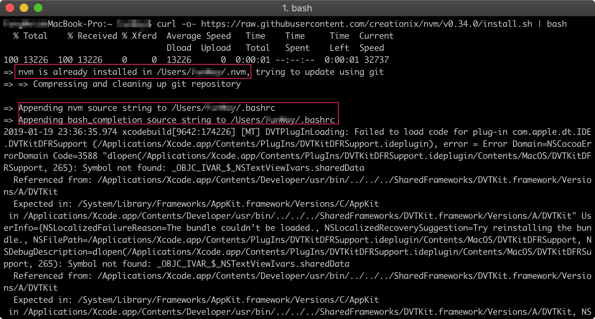
在最後安裝完成時可以輸入
1 | export NVM_DIR="HOME/.nvm" |
來直接載入 nvm 的指令，或是重新啟動 terminal 來載入
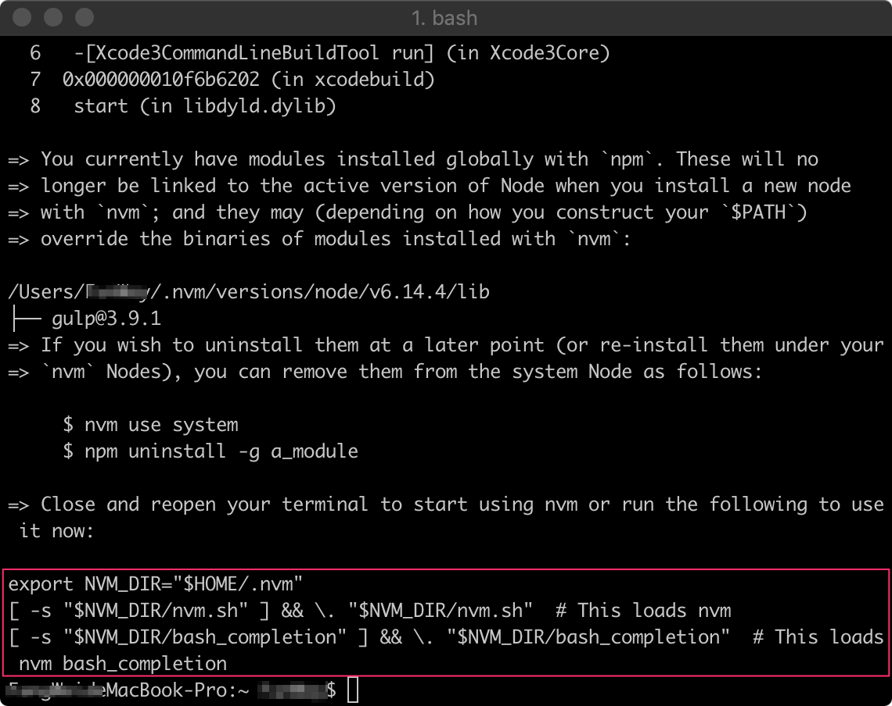
成功!!
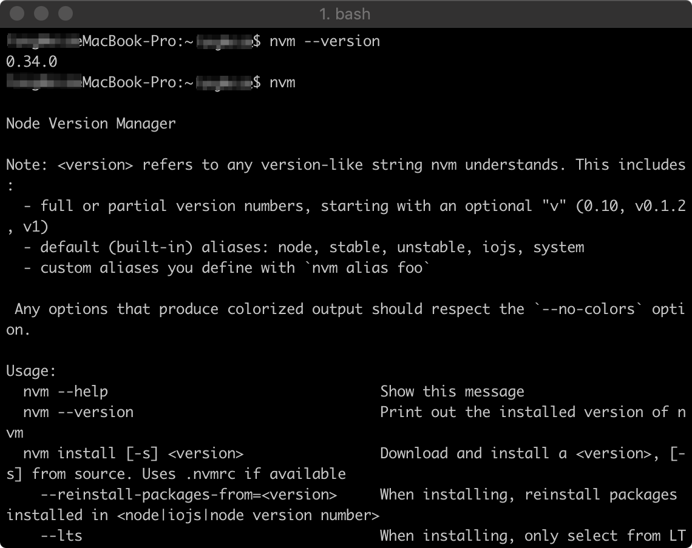
常用指令
- nvm run node [version] — 切換不同版本
- nvm install [version] — 安裝不同版本
- nvm ls — 查看已安裝的版本
- nvm ls-remote — 查看可以安裝的版本
解除安裝方式
輸入指令
1 | rm -rf $NVM_DIR ~/.npm ~/.bower |
然後將命令資訊也刪掉
- 有可能會在 ~/.zshrc, ~/.profile, or ~/.bashrc 之中
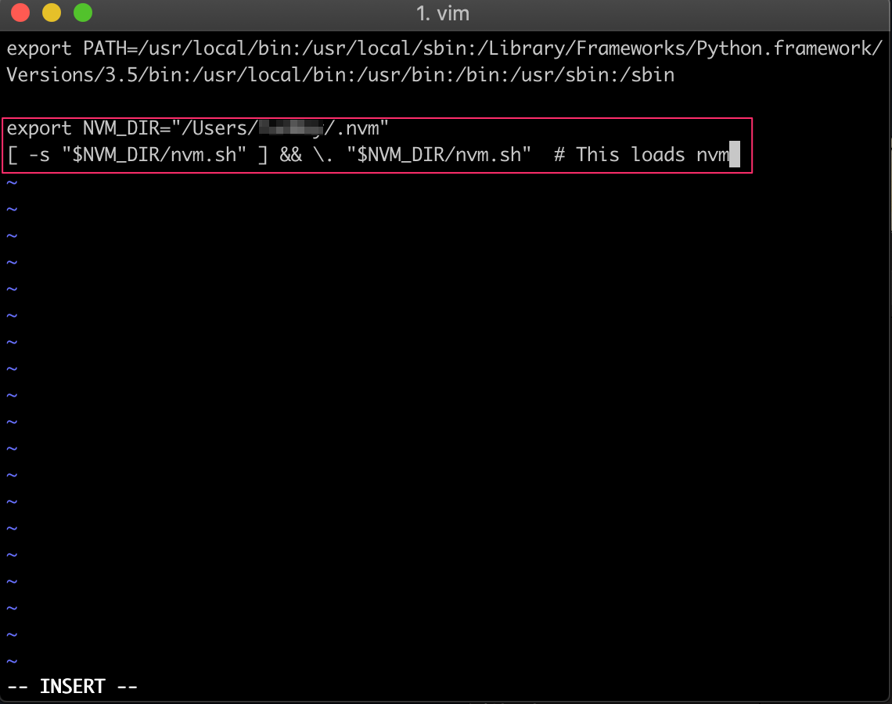
就可以將nvm完全刪除囉!
Windows
雖然 NVM 並沒有提供 Windows 版本，不過還是有大神 Corey Butler 提供了 nvm-windows 為 Windows 提供一樣好用的 Node 版本管理器，而且安裝的方式相當簡單，可以在這個專案的 release 中下載安裝檔(.exe)
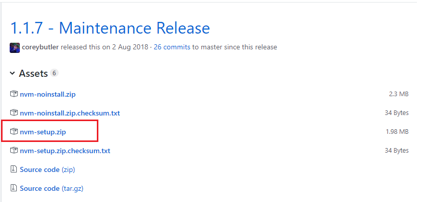
安裝方式
下載 nvm-setup.zip 解壓縮就可以 GET 安裝檔(.exe)
點兩下開始安裝!!!
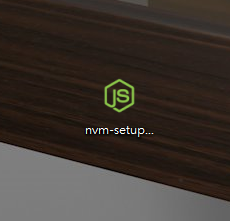
基本上只要一直下一步就可以了!!!
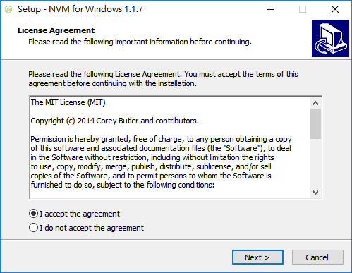
選擇安裝路徑
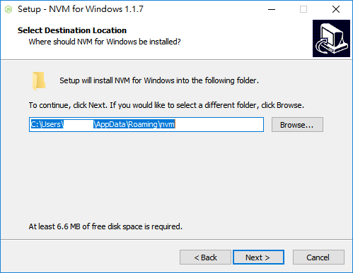
選擇一個存放進入點(捷徑)的路徑並且會自動加入環境變數
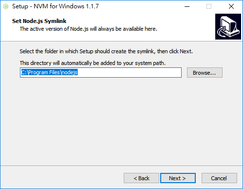
就可順利安裝啦!!!
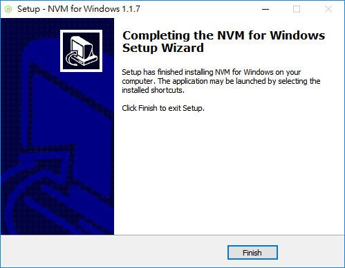
打開 cmder 測試一下( 命令提示字元 cmd 、 powershell 都可以使用)
輸入 : nvm -h
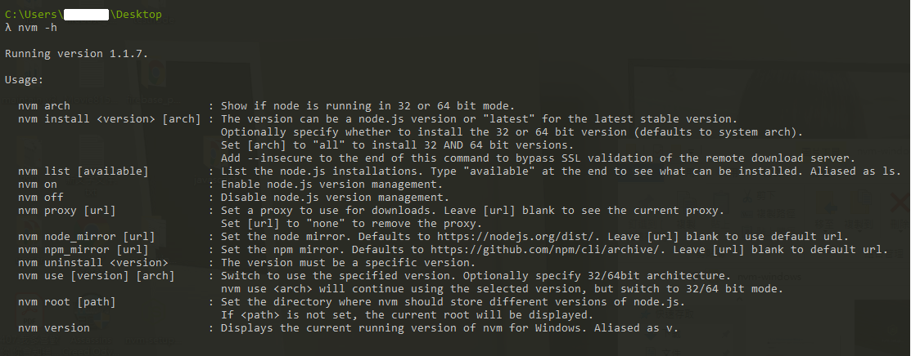
有跑出版本資訊與使用說明就是安裝成功啦!
一樣可以使用
- nvm use [version] — 切換不同版本
- nvm install [version] — 安裝不同版本
- nvm list — 查看已安裝的版本
- nvm list available — 查看可以安裝的版本
解除安裝方式
利用 windows 的新增或移除程式刪除即可!!
註記
- nvm 與 nvm-windows 是不同的套件